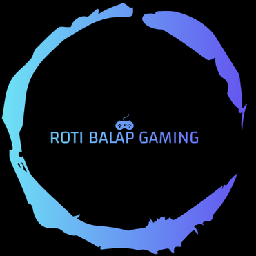

ROTI BALAP
HOME
ABOUT
YOUTUBE
MODE
Follow Saya
About me

Namaku Dzaky, aku gabung di youtube tahun 2022, video pertamaku tentang cara download stumble guys di laptop, awalnya nama channel youtube ku dzaky zulhilmi 86, lalu menjadi dzaky zulhilmi gaming, lalu menjadi ROTI BALAP GAMING
Saya Adalah Gamers
SRC YT: ROTI BALAP GAMING